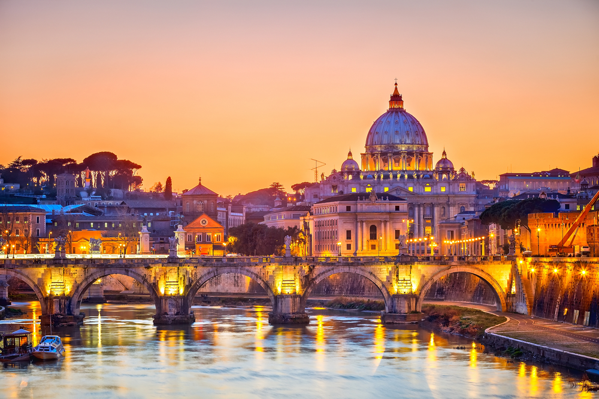

Trastevere
Famoso por sus calles empedradas, sus restaurantes y su vida nocturna.

Roma es la capital de Italia y una de las ciudades más antiguas e influyentes del mundo. Según la leyenda fue fundada por Rómulo y Remo en el año 753 a.C. Durante siglos fue el centro del Imperio Romano y hoy conserva un enorme patrimonio histórico y cultural.
Famoso por sus calles empedradas, sus restaurantes y su vida nocturna.
Considerado el corazón culinario de Roma, ideal para probar platos típicos.
Conocido por ser uno de los más antiguos del mundo.